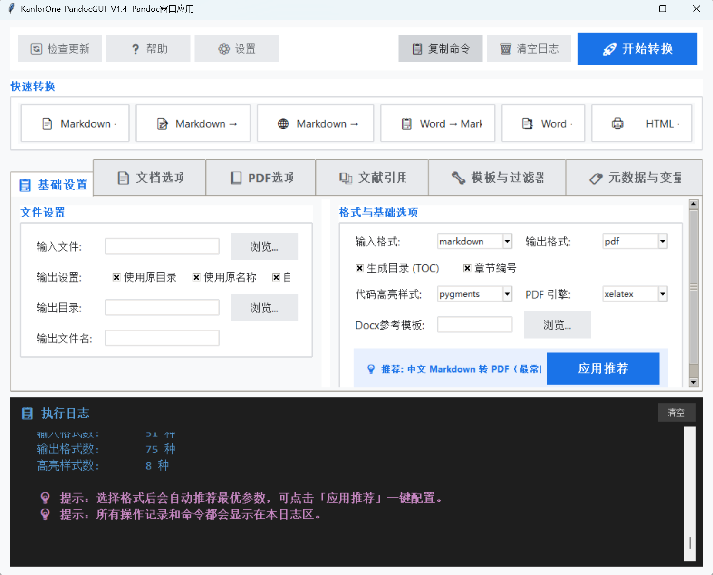

KanlorOne PandocGUI — Pandoc 文档转换图形化工具
下载地址
① 微云下载：https://share.weiyun.com/d56f8rp2
② 文件大小：9 MB（Windows 64位）
一、产品简介
KanlorOne PandocGUI 是一款 Pandoc 文档转换工具的图形化版本。Pandoc 是被誉为「万能文档转换瑞士军刀」的命令行工具，支持数十种文档格式互转，但需要记忆复杂的命令行参数。PandocGUI 将其包装为可视化界面，让用户无需命令即可完成文档转换。
工具集成了参数可视化、参数建议填充、更新检测、过程记录四大核心能力，配置自动保存，下次打开无需重新设置。支持 PDF / Docx / HTML / EPUB / PPTX / Markdown 等多种主流格式互转，并完美支持中文。
二、核心特色
- 可视化操作：图形化界面替代命令行，参数勾选即可，无需记忆语法
- 参数建议填充：智能识别输入输出格式，自动推荐最佳参数组合
- 中文完美支持：内置 xelatex 引擎配置，PDF 输出无乱码
- 更新检测：自动检测 Pandoc 与程序自身版本，提醒更新
- 过程记录：完整记录每次转换的命令、参数、输出，方便复现
| 方向 | 支持格式 |
|---|---|
| 输入格式 | markdown, docx, html, latex, epub, odt, rst 等 |
| 输出格式 | pdf, docx, html, epub, pptx, markdown 等 |
三、使用指南
四、功能详解
将 Pandoc 命令行参数拆解为可视化选项，用户通过勾选和输入框配置，无需记忆参数语法。所有参数变化实时反映在「当前执行命令」区域。
- 输入输出文件选择
- 输出格式下拉选择
- PDF 引擎选择（xelatex / pdflatex / lualatex / wkhtmltopdf 等）
- 代码高亮主题选择（pygments / zenburn / kate 等）
- 生成目录、章节编号、独立页面等开关
- Docx 参考模板文件选择
根据输入输出格式自动推荐最佳参数组合，避免新手踩坑：
- Markdown → PDF：自动推荐 xelatex 引擎 + pygments 高亮 + 中文字体配置
- Markdown → Docx：自动推荐参考模板（如有）+ 章节编号
- HTML → PDF：自动推荐 wkhtmltopdf 引擎 + CSS 样式表
- Docx → Markdown：自动推荐 wrap=none + markdown 格式
用户可在推荐参数基础上自由调整，灵活组合。
- PDF 引擎：优先选择
xelatex（最佳中文支持） - 代码高亮：推荐
pygments或zenburn - 中文字体：通过 YAML 元数据或变量指定系统已安装的宋体（SimSun）
- 页面设置：可指定纸张大小、页边距、行距
xelatex 在系统 PATH 环境变量中。
选择一个已有的 Word 文档作为「Docx 参考模板」，可统一字体、样式、页眉页脚等格式。Pandoc 会将转换后的内容套用模板样式输出。
使用方法：先在 Word 中调整好样式（标题、正文、引用等），保存为 template.docx；在程序中选择该文件作为参考模板即可。
- 启动时自动检测 Pandoc 是否已安装、版本是否兼容
- 支持手动指定
pandoc.exe路径（点击「⚙️ 设置」） - 检测程序自身版本更新，提醒用户下载新版本
- 实时显示转换命令、参数、Pandoc 输出日志
- 记录每次转换的时间、输入输出文件、耗时
- 支持日志复制、清空、导出
- 转换失败时显示详细错误信息，方便定位问题
「当前执行命令」区域完整展示对应的 Pandoc 命令行，点击「复制命令」可一键复制到剪贴板。
用户可在复制后自行修改命令，用于命令行环境执行，实现更高级的定制需求。
五、下载安装
- 操作系统：Windows 7 及以上（64 位）
- Pandoc：需单独安装 Pandoc（推荐 2.x 及以上版本）
- TeX 发行版：输出 PDF 需安装 TeX Live 或 MiKTeX（含 xelatex）
- 磁盘空间：至少 50 MB 可用空间（不含 Pandoc 与 TeX）
pandoc.exe 路径六、更新日志
| 版本 | 更新内容 | 发布日期 |
|---|---|---|
| v1.4 | 全面优化界面及参数推荐 | 2026-07-12 |
| v1.3 | 解决 md 到 docx 乱码问题 | - |
七、常见问题
使用 xelatex 引擎（在 PDF 引擎下拉框中选择），并确保系统已安装宋体（SimSun）等中文字体。PandocGUI 默认推荐 xelatex 引擎，已针对中文优化。
PandocGUI 是 Pandoc 的图形化前端，需要先安装 Pandoc 命令行工具。请从 pandoc.org 下载安装。安装后如仍未识别，点击「⚙️ 设置」手动指定 pandoc.exe 路径。
PDF 输出需要安装 TeX 发行版（TeX Live 或 MiKTeX），并确保 xelatex 在系统 PATH 环境变量中。安装后重启 PandocGUI 再试。
在「当前执行命令」区域点击「复制命令」按钮，将命令复制到剪贴板后自行修改，再在命令行环境中执行。可实现参数建议中未覆盖的高级定制。
选择一个已调整好样式的 Word 文档作为「Docx 参考模板」。Pandoc 会将转换后的内容套用模板样式输出，统一字体、段落、标题等格式。
不会。程序会自动保存您的配置（输入输出路径、参数选项、PDF 引擎等），下次打开直接沿用上次设置。
查看「过程记录」区域的错误日志，常见原因：输入文件路径含特殊字符、Pandoc 未安装、TeX 引擎缺失、输出目录无写入权限等。日志中会显示完整的 Pandoc 错误输出。
支持 pygments、zenburn、kate、monochrome、espresso、tango 等多种主题，推荐 pygments 或 zenburn。
八、快捷键
| 快捷键 | 功能 |
|---|---|
| Ctrl + O | 选择输入文件 |
| Ctrl + Enter | 开始转换 |
| Ctrl + Shift + C | 复制当前命令 |
| Ctrl + L | 清空过程记录 |
| Esc | 取消正在进行的转换 |